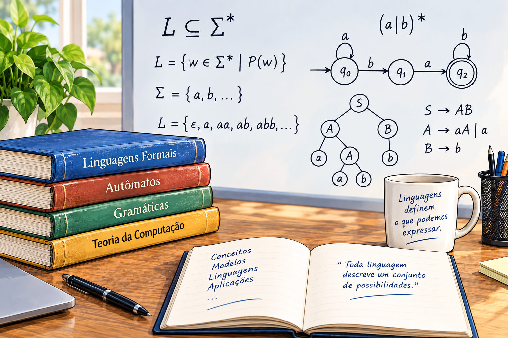

1 Introdução à Teoria de Linguagens

1.1 Computabilidade, Complexidade e Autômatos
A teoria da computação busca compreender os limites e as possibilidades dos processos computacionais. Depois de estudar linguagens formais, autômatos e técnicas de análise de linguagens, é natural avançar para questões mais amplas: quais problemas podem ser resolvidos por um computador?, quais problemas não podem ser resolvidos por nenhum algoritmo? e quais recursos são necessários para resolver um problema computável?. Essas questões conduzem aos conceitos de computabilidade e complexidade computacional.
Além de determinar se um problema pode ser resolvido, a teoria da complexidade procura determinar quais recursos computacionais são necessários para resolvê-lo. Serão introduzidas as medidas de tempo e espaço utilizadas para analisar algoritmos e as principais classes de complexidade, permitindo distinguir problemas computáveis que podem ser resolvidos de maneira eficiente daqueles para os quais não se conhecem soluções eficientes.
Neste livro, serão apresentados ainda diferentes modelos formais de computação e suas relações com os problemas que podem ser solucionados algoritmicamente. Entre esses modelos estão os autômatos finitos, os autômatos de pilha e as máquinas de Turing, que se diferenciam, entre outros aspectos, pelos recursos de memória disponíveis e pelo poder computacional que possuem. O estudo desses modelos permite compreender como o poder computacional aumenta à medida que são incorporados novos recursos de memória, estabelecendo uma relação entre linguagens e modelos de computação.
A partir das máquinas de Turing, será possível estabelecer um modelo geral de computação e investigar de forma mais abrangente a noção de algoritmo, incluindo problemas para os quais não existe um procedimento computacional capaz de produzir uma resposta para todas as entradas. Nesse contexto, serão discutidos conceitos fundamentais como decidibilidade, reconhecimento de linguagens e problemas indecidíveis. Essa perspectiva permite estabelecer uma visão integrada da Teoria da Computação, relacionando linguagens, autômatos, computabilidade e complexidade, e mostrando como esses conceitos contribuem para os fundamentos da Ciência da Computação.
Os conceitos de Computabilidade, complexidade e autômatos estão relacionados ao projeto e à implementação de compiladores, pois permitem compreender os limites teóricos e os recursos necessários para processar linguagens de programação. Conforme será destacado no desenvolvimento deste livro, os autômatos fornecem os modelos formais utilizados nas diferentes etapas da análise de um programa: os autômatos finitos fundamentam a análise léxica, enquanto os autômatos de pilha e as gramáticas livres de contexto sustentam a análise sintática. A teoria da computabilidade, por sua vez, permite compreender quais problemas podem ou não ser resolvidos algoritmicamente, estabelecendo limites para as tarefas que um compilador pode realizar. Já a teoria da complexidade contribui para avaliar o custo computacional dos algoritmos empregados no processo de compilação, especialmente quando se busca desenvolver analisadores e transformações eficientes. Dessa forma, autômatos, computabilidade e complexidade constituem fundamentos teóricos que ajudam a explicar não apenas como um compilador processa programas, mas também o que é possível processar e a que custo computacional.
Teoria da Complexidade
A Teoria da Complexidade Computacional é um ramo da Ciência da Computação que estuda a quantidade de recursos necessários para resolver problemas computacionais. Entre esses recursos, destacam-se principalmente o tempo de execução, correspondente ao número de operações realizadas por um algoritmo, e o espaço de memória, correspondente à quantidade de memória utilizada durante sua execução. O principal objetivo dessa área é compreender como esses recursos crescem à medida que o tamanho da entrada aumenta, permitindo comparar diferentes algoritmos e identificar aqueles mais adequados para resolver um determinado problema.
Nem todos os problemas apresentam o mesmo grau de dificuldade computacional. Alguns podem ser resolvidos de forma bastante eficiente, mesmo quando a quantidade de dados é muito grande. Outros, entretanto, tornam-se rapidamente inviáveis à medida que o tamanho da entrada cresce. Um exemplo clássico de problema relativamente simples é a ordenação de um vetor de números. Existem diversos algoritmos capazes de ordenar milhões de elementos em poucos segundos, tornando essa tarefa perfeitamente viável na prática. Em contraste, problemas como a elaboração automática do horário de aulas de uma universidade envolvem inúmeras restrições e combinações possíveis. É necessário considerar disponibilidade de professores, salas, disciplinas, turmas e conflitos de horários, fazendo com que o número de soluções possíveis cresça exponencialmente. Consequentemente, encontrar a melhor solução pode exigir um esforço computacional extremamente elevado.
Para analisar esse comportamento, a Teoria da Complexidade utiliza a notação assintótica, sendo a mais conhecida a notação Big-O, representada por \(O(\cdot)\). Essa notação descreve como o tempo de execução ou o consumo de memória de um algoritmo cresce em função do tamanho da entrada, normalmente representado por \(n\). Por exemplo, um algoritmo de complexidade \(O(1)\) executa sempre o mesmo número de operações, independentemente da quantidade de dados. Algoritmos com complexidade \(O(\log n)\), como a busca binária, crescem muito lentamente e permanecem eficientes mesmo para entradas muito grandes. Já algoritmos com complexidade \(O(n)\) apresentam crescimento linear, enquanto algoritmos \(O(n^2)\), comuns em métodos simples de ordenação, têm seu tempo de execução aumentando quadraticamente conforme a entrada cresce.
À medida que surgem problemas mais difíceis, aparecem também novas classes de complexidade, como \(O(2^n)\) e \(O(n!)\), cujo crescimento é tão acelerado que inviabiliza sua resolução exata para entradas relativamente pequenas. Esses problemas são frequentemente classificados como intratáveis, pois, embora possuam solução teórica, o tempo necessário para obtê-la pode ultrapassar a idade do universo mesmo utilizando computadores extremamente rápidos. A identificação desses limites é uma das principais contribuições da Teoria da Complexidade.
Quando um problema apresenta alta complexidade computacional, nem sempre é possível encontrar uma solução ótima em tempo razoável. Nesses casos, diversas estratégias podem ser empregadas. Uma possibilidade consiste em simplificar o problema original, reduzindo o número de restrições ou considerando apenas parte dos dados disponíveis. Outra alternativa é utilizar algoritmos aproximativos, que produzem soluções próximas da ideal, mas em um tempo significativamente menor. Também são amplamente empregadas técnicas probabilísticas e heurísticas, como algoritmos genéticos, colônia de formigas, recozimento simulado (simulated annealing), busca tabu e métodos de otimização baseados em inteligência artificial. Embora essas técnicas não garantam a obtenção da melhor solução possível, frequentemente produzem resultados de excelente qualidade em aplicações reais.
A Teoria da Complexidade possui aplicações em praticamente todas as áreas da computação, incluindo otimização, inteligência artificial, pesquisa operacional, bioinformática, logística e redes de computadores. Uma de suas aplicações mais importantes está na criptografia moderna. Os principais sistemas criptográficos utilizados atualmente, como RSA e criptografia baseada em curvas elípticas, fundamentam sua segurança na dificuldade computacional de determinados problemas matemáticos. A ideia central é que algumas operações, como multiplicar dois números primos muito grandes, são realizadas rapidamente, enquanto a operação inversa — fatorar o produto obtido — é extremamente difícil do ponto de vista computacional. Dessa forma, a segurança das comunicações digitais depende justamente da existência de problemas para os quais não se conhecem algoritmos eficientes de solução. Assim, compreender a complexidade dos problemas não apenas permite desenvolver algoritmos mais rápidos, mas também é essencial para projetar sistemas computacionais seguros e confiáveis.
Teoria da Computabilidade
A Teoria da Computabilidade é o ramo da Ciência da Computação que estuda os limites fundamentais da computação. Seu principal objetivo é responder à seguinte pergunta: quais problemas podem ser resolvidos por um algoritmo? Diferentemente da Teoria da Complexidade, que procura medir o custo computacional necessário para resolver um problema, a Teoria da Computabilidade investiga se uma solução algorítmica existe. Em outras palavras, essa área busca determinar se é possível construir um procedimento mecânico que, para qualquer entrada válida, produza a resposta correta em um número finito de passos.
No final do século XIX, a matemática atravessava um período de intensa expansão, mas também de profundas incertezas. Novas teorias surgiam rapidamente, enquanto paradoxos relacionados à Teoria dos Conjuntos colocavam em dúvida a consistência dos fundamentos matemáticos. Nesse contexto, o matemático alemão David Hilbert (1862–1943) propôs um ambicioso programa de pesquisa, conhecido como Programa de Hilbert, cujo objetivo era estabelecer uma base sólida para toda a matemática.
A proposta de Hilbert consistia em formalizar completamente a matemática, reescrevendo todas as demonstrações por meio de um sistema finito de axiomas e regras de inferência rigorosamente definidas. Em outras palavras, qualquer demonstração matemática deveria poder ser realizada como uma sequência mecânica de aplicações de regras lógicas, eliminando ambiguidades e garantindo que toda conclusão fosse obtida de forma objetiva. Hilbert também desejava demonstrar que esse sistema seria consistente (livre de contradições), completo (capaz de provar toda afirmação verdadeira expressável no sistema) e decidível, isto é, deveria existir um procedimento mecânico capaz de determinar, em tempo finito, se qualquer proposição matemática é verdadeira ou falsa.
Em 1900, durante o Congresso Internacional de Matemáticos realizado em Paris, Hilbert apresentou uma lista de 23 problemas que considerava fundamentais para o desenvolvimento da matemática no século XX. Esses problemas orientaram décadas de pesquisa em diversas áreas e muitos deles permanecem influentes até os dias atuais. Posteriormente, foir proposto o chamado Entscheidungsproblem (problema da decisão), formulado de maneira mais explícita por David Hilbert e Wilhelm Ackermann na década de 1920. O problema consistia em responder à seguinte pergunta: existe um procedimento geral que possa decidir automaticamente se qualquer afirmação matemática é demonstrável?
Responder a essa questão exigia, antes de tudo, definir com precisão o que significa um procedimento mecânico ou um algoritmo. Até então, essa ideia era intuitiva, mas não possuía uma definição matemática rigorosa. Em 1936, o matemático britânico Alan Turing apresentou uma resposta inovadora ao introduzir um modelo abstrato de computação, hoje conhecido como Máquina de Turing. Esse modelo descreve uma máquina extremamente simples, capaz de ler, escrever e modificar símbolos em uma fita infinita seguindo um conjunto finito de regras. Apesar de sua simplicidade, Turing demonstrou que esse modelo é capaz de representar qualquer algoritmo executável.
Utilizando esse modelo, Turing provou que não existe um algoritmo capaz de decidir, para toda proposição matemática, se ela é demonstrável. Para isso, demonstrou inicialmente a inexistência de um algoritmo geral para resolver o chamado Problema da Parada (Halting Problem), isto é, determinar se um programa qualquer terminará sua execução ou permanecerá executando indefinidamente. A partir desse resultado, concluiu-se que o Entscheidungsproblem possui resposta negativa: existem problemas matemáticos que nenhum procedimento mecânico pode resolver.
Esse trabalho marcou o nascimento da Teoria da Computabilidade e estabeleceu as bases da Ciência da Computação moderna. A Máquina de Turing tornou-se o principal modelo teórico para o estudo dos algoritmos, dos limites da computação e da classificação dos problemas em computáveis e não computáveis. Além disso, suas ideias influenciaram profundamente o desenvolvimento das linguagens de programação, dos compiladores e da própria arquitetura dos computadores digitais.
Teoria dos Autômatos
A Teoria dos Autômatos é o ramo da Ciência da Computação que estuda modelos matemáticos capazes de representar máquinas abstratas de processamento de informações, denominadas autômatos. Esses modelos descrevem, de maneira formal, como um sistema recebe uma sequência de símbolos como entrada, altera seu estado interno de acordo com regras previamente definidas e produz uma resposta, que normalmente consiste em aceitar ou rejeitar a entrada. Embora sejam construções puramente matemáticas, os autômatos constituem uma das bases teóricas da computação moderna e permitem compreender o funcionamento de diversos sistemas computacionais.
O conceito de autômato surgiu da necessidade de representar algoritmos de forma abstrata, sem depender das características específicas de um computador físico. Dessa forma, é possível estudar as propriedades dos algoritmos, das linguagens e dos problemas computacionais utilizando modelos simples e rigorosamente definidos. Cada tipo de autômato possui capacidades computacionais próprias e é capaz de reconhecer determinadas classes de linguagens formais, estabelecendo uma estreita relação entre a Teoria dos Autômatos e a Teoria das Linguagens Formais.
O modelo mais simples é o autômato finito, cuja principal característica é possuir um número limitado de estados e não dispor de memória além do estado atual. Apesar dessa simplicidade, os autômatos finitos possuem inúmeras aplicações práticas. Eles são utilizados em ferramentas de busca de padrões em textos, reconhecimento de palavras, validação de entradas em formulários, protocolos de comunicação, circuitos digitais e sistemas de controle. Uma das aplicações mais importantes encontra-se na construção de compiladores, onde autômatos finitos são empregados na análise léxica, responsável por identificar palavras reservadas, identificadores, números, operadores e demais símbolos que compõem um programa.
Para reconhecer linguagens mais complexas, que apresentam estruturas aninhadas ou dependências hierárquicas, é necessário utilizar modelos computacionais mais poderosos. Os autômatos de pilha estendem os autômatos finitos por meio da adição de uma estrutura de memória denominada pilha, que permite armazenar informações temporárias durante o processamento da entrada. Graças a essa memória adicional, esses autômatos conseguem reconhecer as linguagens livres de contexto, fundamentais para a descrição da sintaxe das linguagens de programação. Em consequência, os autômatos de pilha são amplamente utilizados na implementação da análise sintática de compiladores e interpretadores, verificando se um programa está de acordo com as regras gramaticais da linguagem.
Além das aplicações em compiladores, modelos baseados em autômatos aparecem em diversas áreas da computação. Na inteligência artificial, por exemplo, máquinas de estados são empregadas para modelar o comportamento de agentes inteligentes, personagens de jogos digitais e robôs autônomos. Em engenharia de software, diagramas de estados são utilizados para especificar o comportamento de sistemas reativos e protocolos de comunicação. Em redes de computadores, autômatos representam o funcionamento de protocolos de transmissão de dados, enquanto na bioinformática são utilizados para análise de sequências de DNA e proteínas. Essas aplicações demonstram que os autômatos constituem uma ferramenta versátil para representar sistemas que evoluem entre diferentes estados de acordo com eventos ou entradas recebidas.
A Teoria dos Autômatos também estabelece uma importante hierarquia entre diferentes modelos de computação. À medida que novos recursos de memória são adicionados aos autômatos, sua capacidade computacional aumenta. Assim, autômatos finitos reconhecem linguagens regulares; autômatos de pilha reconhecem linguagens livres de contexto; máquinas de Turing, por sua vez, representam o modelo computacional mais geral conhecido e são capazes de executar qualquer algoritmo computável. Essa relação entre modelos computacionais e classes de linguagens é formalizada pela Hierarquia de Chomsky, um dos pilares da Teoria das Linguagens Formais.
Além de suas aplicações práticas, a Teoria dos Autômatos fornece o formalismo matemático utilizado pelas teorias da Computabilidade e da Complexidade. A definição rigorosa de modelos computacionais permite estabelecer quais problemas podem ser resolvidos por algoritmos, quais estão além dos limites da computação e quanto tempo ou memória são necessários para resolver determinados problemas. Em outras palavras, antes de estudar a eficiência de um algoritmo ou os limites da computação, é necessário definir formalmente o que significa “computar”, e essa definição é fornecida pelos modelos estudados na Teoria dos Autômatos.
Ao longo deste livro, os diferentes modelos de autômatos serão apresentados de forma progressiva, iniciando pelos autômatos finitos, passando pelos autômatos de pilha e culminando nas máquinas de Turing. Esse percurso permitirá compreender não apenas como esses modelos funcionam, mas também como eles se relacionam com as linguagens formais, os compiladores e os fundamentos teóricos da Ciência da Computação. Dessa maneira, a Teoria dos Autômatos serve como elo entre os conceitos matemáticos abstratos e as aplicações práticas que sustentam o desenvolvimento de linguagens de programação, compiladores e diversos sistemas computacionais utilizados atualmente.